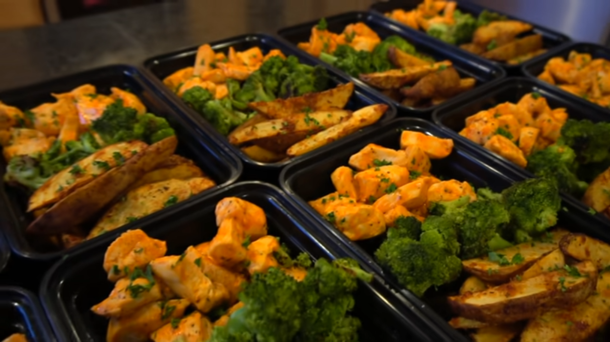

Buffalo Chicken

Reference Video
Description
Some pretty good buffalo chicken that is quick and easy to make.
This recipe is for 1 serving but I typically but enough to make 5 days worth.
I also usually make veggies along with something like fries, potato wedges, or rice to go with this.
Ingredients
- Boneless Skinless Chicken Breast [2.5 lbs] (1135 g)
- Buffalo Sauce [2-3 Tbsp] (30 ml)
- Olive Oil [1 Tbsp] (15 g)
- Butter [1 Tbsp] (14 g)]
- Salt
- Pepper
Steps
- Start preheating Oven to 400°F
- Cut the chicken breast into one inch cubes.
- Season lightly with salt and pepper.
- Lightly spray a large sheet pan with butter.
- Bake at 400°F for 10-12 minutes, flipping halfway.
- (Optional) Use a skillet instead.
- Heat a large skillet over medium high heat and add in 1 Tbsp of olive oil.
- Add the chicken and cook until it is white in the center, around 7-8 minutes.
- When the chicken is just about cooked through, melt 1 Tbsp of butter and mix in 1 tsp of cornstarch and 2-3 Tbsp of buffalo sauce.
- Make Sauce.
- Mix 1 Tbsp of melted butter and 2-3 Tbsp of buffalo sauce.
- Stir.
- After cooking chicken, take out and put in a large bowl to mix with sauce. Add more sauce if needed.
- Serve or put in the fridge/freezer.
- (Optional) Garnish with some parsley.